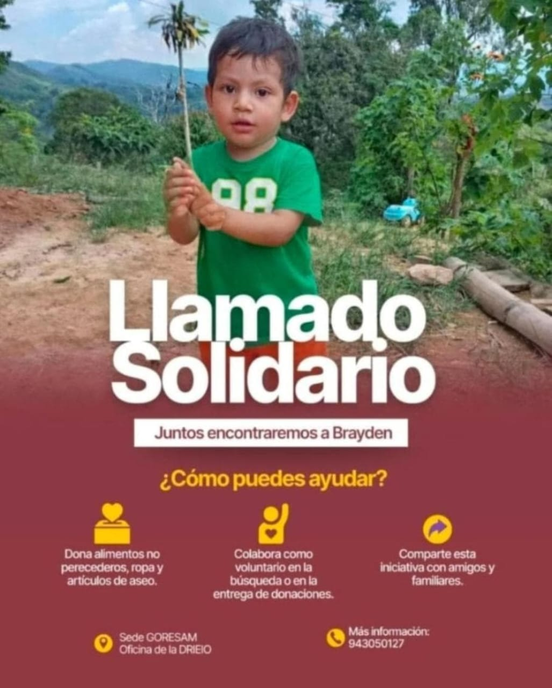

Se encuentra desaparecido desde el 21 de diciembre en la ciudad de Moyobamba – San Martín, Perú.
Cada información, por pequeña que parezca, puede marcar la diferencia para que Bryden regrese sano y salvo a casa.

Si tiene cualquier información sobre el paradero de Bryden, por favor comuníquese inmediatamente con la Policía Nacional del Perú llamando al 114 o con las autoridades locales de Moyobamba. Cada minuto cuenta.